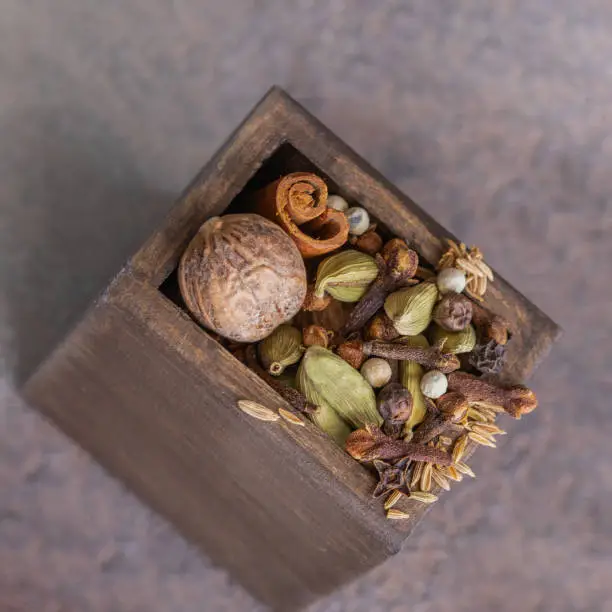

Unroll the World of Flavor.
Transform how curious cooks explore global flavors, bold recipes, and essential spice knowledge.
Spice-Powered Recipe Library
Embark on a culinary adventure with our global recipe collection. Filter by spice level, cuisine, and discover your next favorite dish!
Classic Indian Chicken Curry
A fragrant and rich chicken curry, slow-cooked with aromatic spices to perfection. This recipe balances heat with deep, earthy flavors...
Ingredients:
- 500g boneless chicken thigh, cut into 1-inch pieces
- 2 large onions, finely chopped
- 3 tomatoes, puréed
- 2 tbsp ginger-garlic paste
- 1 tsp turmeric powder
- 2 tsp coriander powder
- 1 tsp cumin powder
- 1 tsp red chili powder (adjust to taste)
- 1 tsp garam masala
- 1/2 cup plain yogurt
- Fresh cilantro for garnish
- 2 tbsp oil
- Salt to taste
Instructions:
- Heat oil in a large pot or Dutch oven over medium heat. Add chopped onions and sauté until golden brown, about 10-12 minutes. Stir frequently to prevent burning.
- Add ginger-garlic paste and sauté for another 2 minutes until fragrant.
- Stir in turmeric, coriander, cumin, and red chili powder. Cook for 1-2 minutes, adding a splash of water if the spices stick, to prevent burning and allow flavors to bloom. This "blooming" technique is crucial for developing depth...
- Add the tomato purée and cook until the oil separates from the mixture, approximately 8-10 minutes. This indicates the tomatoes are well-cooked and their acidity has mellowed...
- Stir in the chicken pieces and cook until sealed on all sides, about 5 minutes.
- Reduce heat to low. Whisk the yogurt in a small bowl to ensure it's smooth, then slowly add it to the curry, stirring constantly to prevent curdling. Cook for 5 minutes, allowing the yogurt to integrate into the sauce...
- Add 1 cup of water (or chicken broth for richer flavor), bring to a simmer, then cover and cook for 20-25 minutes, or until chicken is tender. Stir occasionally to prevent sticking.
- Stir in garam masala and simmer for another 5 minutes uncovered.
- Garnish with fresh cilantro and serve hot with rice or naan bread. This dish pairs wonderfully with a cooling raita to balance the heat...
Spicy Carnitas Tacos with Pickled Onions
Tender, slow-cooked pork carnitas infused with Mexican spices, perfect for building your own vibrant tacos. The pickled onions add a zesty contrast...
This recipe dives into the heart of authentic Mexican street food, focusing on the slow-braising technique that makes carnitas so incredibly tender and flavorful. We'll explore the specific properties of ancho chilies, their mild heat, and rich, fruity undertones, contrasting them with the earthiness of cumin and the pungent notes of Mexican oregano. The pickling process for onions will be detailed, explaining the science behind the quick pickle and how it provides a crucial acidic balance to the fatty pork...
Ingredient Spotlight: Ancho Chili - Ancho chilies are dried poblano peppers. When rehydrated, they contribute a mild, sweet, and smoky flavor, foundational to many Mexican dishes. Their Scoville heat unit (SHU) is typically between 1,000-1,500, making them less hot than jalapeños but rich in flavor...
Pro Tip for Carnitas: Achieving that perfectly crispy exterior on your carnitas after slow-cooking is key. After the initial braise, broil or pan-fry the shredded pork in some of its rendered fat until golden and slightly charred. This adds a textural dimension that elevates the dish...
Vibrant Thai Green Curry with Tofu
An authentic, fiery Thai green curry, bursting with fresh herbs and spices. This vegetarian version uses crispy tofu...
Dive into the vibrant world of Thai cuisine with this intensely aromatic and spicy green curry. The heart of this dish lies in its homemade green curry paste, where fresh green chilies provide the fiery kick, complemented by the citrusy notes of lemongrass, the pungent warmth of galangal, and the unique floral aroma of kaffir lime leaves. Understanding the balance of these fresh ingredients is paramount to achieving an authentic flavor profile. We'll detail how to source fresh ingredients, and if not available, suitable substitutes. The role of coconut milk in tempering the heat while providing a creamy, rich base will be thoroughly discussed, along with tips for achieving the perfect consistency. The history of Thai curries, their regional variations, and the cultural significance of shared meals in Thailand will also be explored.
Spice Spotlight: Galangal vs. Ginger - While they look similar, galangal has a sharper, more citrusy, and piney flavor compared to ginger's pungent, spicy, and sweet notes. It's essential for authentic Thai and Southeast Asian flavors.
Balancing the Heat: For those who find the "Blazing Hot" level too intense, this recipe will offer clear guidance on how to adjust the number of green chilies. Additionally, we'll suggest incorporating more coconut milk or a squeeze of lime juice at the end to mellow the spice without sacrificing flavor. The interplay between sweet, sour, salty, and spicy is the cornerstone of Thai cooking, and this recipe exemplifies it...
The Spice Scroll — Education Hub
Unravel the mysteries of the world's most fascinating spices. Learn their origins, culinary uses, and unique flavor profiles.
Turmeric
Origin: India & Southeast Asia
Uses: Curries, lattes, anti-inflammatory
Flavor: Earthy, bitter, slightly peppery
Deep Dive: Turmeric, the "golden spice," is more than just a coloring agent. Its vibrant hue comes from curcumin, a powerful antioxidant. Historically, it has been used in Ayurvedic medicine for thousands of years... Its culinary journey from ancient India to global superfood is fascinating. We'll explore its different forms (fresh root, ground powder), how to activate its flavors, and common pairings in various cuisines. Discover why a pinch of black pepper boosts its bioavailability...
...
Cinnamon
Origin: Sri Lanka, China
Uses: Desserts, savory dishes, beverages
Flavor: Sweet, woody, warm, spicy
Deep Dive: Cinnamon, one of the oldest spices known, comes in various forms like Ceylon (true) and Cassia. Each has distinct flavor profiles and uses. We'll delve into its historical trade routes, its role in ancient rituals, and its surprising versatility in both sweet and savory dishes from Mexican mole to Middle Eastern stews. Learn the best way to grind cinnamon sticks for maximum aroma...
...
Black Pepper
Origin: Southern India
Uses: Universal seasoning, marinades, rubs
Flavor: Pungent, woody, spicy, floral
Deep Dive: Often overlooked, black pepper is the "King of Spices." We'll explore its journey from a precious commodity to a kitchen staple. Discover the nuances between different peppercorns (black, white, green, pink), the science behind its pungency (piperine), and why fresh-ground pepper makes all the difference. Its historical impact on global trade and exploration cannot be overstated...
...
Interactive Spice Map
(Image of a world map with clickable spice regions, leading to more detailed spice information.)
Explore the geographical origins of spices, tracing their ancient routes and discovering how they've shaped culinary traditions worldwide. Click on a region to unveil its signature spices and their cultural significance. From the Silk Road's spice caravans to modern sustainable farming practices, this interactive map is your passport to spice discovery.
Beginner Guides: Mastering Spice Techniques
Grinding Spices
Unlock fresh aromas by grinding your own spices. Learn the difference between a mortar and pestle and an electric grinder, and when to use each for optimal results. Techniques for achieving fine powders vs. coarse textures for different culinary applications...
Blooming Spices
Discover the magic of "blooming" spices in oil or ghee. This crucial technique releases fat-soluble compounds, intensifying flavors and aromas. We'll explain the science behind it, ideal temperatures, and which spices benefit most...
Storing Spices
Preserve potency and extend shelf life! Proper storage is key. Learn about airtight containers, cool dark places, and the enemy of spices: light, heat, and air. We'll guide you on how long different forms of spices last...
Blending Your Own
Become a spice artisan! Learn the fundamentals of creating balanced spice blends. Explore classic combinations like Garam Masala, Ras el Hanout, or Baharat, and how to develop your own signature mixes. Understanding flavor profiles is key...
Practical Cooking Tips Section
Unlock the secrets to mastering bold flavors in your home kitchen with these essential tips and tricks.
Everyday Spice Tips
Start Small with New Spices
When experimenting with unfamiliar spices, always begin with a small amount (e.g., 1/4 teaspoon). You can always add more, but you can't easily remove it. This cautious approach allows you to build layers of flavor gradually and adjust to your palate. We'll discuss why certain spices are more potent than others and how to gauge their impact in a dish...
Toast (Bloom) Spices for Deeper Aroma
Dry-toasting whole or ground spices in a pan before adding them to a dish awakens their essential oils, intensifying their fragrance and flavor. Learn the correct technique, ideal temperatures, and how to avoid burning them. This process significantly transforms the culinary experience...
Salt Enhances Spice Flavors
Salt isn't just for seasoning; it's a flavor enhancer. A judicious amount of salt can make the nuanced notes of spices pop, brightening the overall profile of a dish. We'll explain the interplay between salt and spices and how to use them synergistically...
Store Properly for Maximum Freshness
Light, heat, and air are the enemies of spice freshness. Store spices in airtight containers in a cool, dark place, away from direct sunlight and heat sources like stovetops. This preserves their volatile oils and extends their potency, ensuring your dishes always have vibrant flavor...
Heat Balance Tips
Dairy or Coconut Milk Cools Down Heat
If your dish is too spicy, dairy products like yogurt, milk, or sour cream, or creamy coconut milk, can help. The fats and proteins in these ingredients bind with capsaicin (the compound that causes heat), neutralizing its intensity. This is a common technique in Indian and Thai cuisines...
Acidity Brightens Spice-Heavy Dishes
A squeeze of lime or lemon juice, a splash of vinegar, or a dollop of fresh tomato can cut through the richness and heat of a heavily spiced dish, adding a refreshing brightness. Acidity balances flavors and prevents dishes from tasting flat or overly dominant in spice. It also helps in digestion...
A Little Sugar Balances Fiery Blends
A tiny pinch of sugar or a touch of honey can surprisingly balance the intensity of a very spicy dish. It doesn't necessarily reduce the heat but helps to round out the flavors, making the heat more palatable and less overwhelming. This is often seen in Asian cooking...
Scroll & Cook Challenges
Join our monthly challenges, explore global spice themes, and share your culinary creations with the SpiceScroll community!
July Challenge: The Magic of Sumac!
This month, we challenge you to explore the tangy, bright flavor of Sumac. Create a dish that highlights this vibrant Middle Eastern spice. Share your photos and recipes using #SpiceScrollSumacChallenge for a chance to win a curated Middle Eastern spice kit!
Previous Challenges:
- June: The Versatility of Paprika - From Hungarian Goulash to Spanish Chorizo. Explore diverse paprika types (sweet, smoked, hot) and their impact on color and flavor.
- May: Cardamom's Charm - Sweet and Savory applications in Nordic Baking and Indian Curries. Delve into green vs. black cardamom and their unique aromatic profiles.
How to Participate:
- Choose a recipe that features the monthly challenge spice prominently. You can use one of our recipes or create your own!
- Cook the dish, taking vibrant photos of the process and final plating.
- Write a brief description of your dish, including any personal tips or twists.
- Share on social media with the designated hashtag (e.g., #SpiceScrollSumacChallenge) or upload directly to our platform.
- Engage with other participants, leave comments, and upvote your favorite submissions.
Prizes and Badges:
Winners receive exclusive SpiceScroll merchandise, limited-edition spice blends, and a featured spot on our homepage. Every participant who completes a challenge earns a digital badge to showcase on their profile, building their "Spice Explorer" reputation!
Spice Shop - Curated Blends & Global Kits
Elevate your pantry with our expertly curated spice blends, rare single-origin spices, and limited "Scroll Editions."
SpiceScroll Signature Garam Masala
$12.99
Our signature blend of 11 freshly roasted and ground spices, perfect for authentic Indian curries and stews. Hand-blended in small batches for maximum freshness and aroma...
Mexican Fiesta Spice Kit
$29.99
Everything you need for a Mexican culinary journey: Ancho Chili Powder, Cumin, Mexican Oregano, Smoked Paprika, and a recipe guide for tacos, enchiladas, and more!
Scroll Edition: Premium Persian Saffron
$39.99
Limited quantity! Hand-picked, Sargol grade saffron from Khorasan, Iran. Unparalleled aroma and vibrant color for paella, risotto, and exquisite desserts...
Why choose SpiceScroll Spices?
We meticulously source our spices from ethical and sustainable farms worldwide. Our commitment to quality means fresh, potent flavors in every pinch. Each blend is crafted to inspire culinary creativity and bring authentic global tastes to your kitchen. We conduct rigorous testing to ensure purity and potency, and our packaging is designed to maintain freshness for longer. Learn more about our sourcing philosophy and meet our growers around the world. We believe in direct trade relationships that empower local communities and ensure fair practices from farm to table. Our "Seed to Spoon" initiative highlights the journey of each spice, giving you complete transparency and confidence in your purchase.
Community-Driven Features
Connect with fellow food explorers, share your culinary journey, and get inspired by others!
Upvoted User Tips
Discover invaluable cooking hacks and spice insights from our passionate community members. The best tips appear directly beneath relevant recipes!
"For a richer tomato sauce, add a pinch of smoked paprika early in the cooking process. It adds depth without overpowering!" - User: FlavorFanatic88
"If your chili is too hot, stir in a spoonful of peanut butter! It's a game-changer for balancing intense heat." - User: SpiceTamer
Our community is a vibrant hub of culinary wisdom. Users can submit their own tips directly on recipe pages, and through upvoting, the most helpful and creative tips rise to the top. This peer-to-peer learning environment fosters a dynamic exchange of knowledge, making SpiceScroll not just a recipe platform but a living cookbook shaped by real home cooks. We moderate submissions to ensure quality and relevance, but the content itself is a testament to the collective expertise of our users...
Scroll of the Day
A daily dose of delicious! Get a random recipe or fascinating spice fact to spark your culinary inspiration. Never run out of new things to try or learn!
Today's Scroll: Did you know that nutmeg is toxic in large doses, but a tiny grating adds warmth and depth to both sweet and savory dishes?
The "Scroll of the Day" is designed to be a delightful daily surprise, encouraging continuous engagement with our diverse content. Each day, a new entry is randomly selected from our vast database of recipes, spice deep dives, and trivia. It's a perfect way to discover hidden gems you might not have found otherwise. Users can also 'save' their favorite Scrolls of the Day to a personal collection for future reference...
Featured User Stories & Success Badges
Read inspiring stories from home cooks who transformed their cooking with SpiceScroll. Earn badges for mastering spices, completing challenges, and sharing your knowledge!
"I used to only cook with salt and pepper. Thanks to SpiceScroll, I'm now making Ethiopian Doro Wat and blending my own Berbere!" - Story of Priya S.
Our "Featured User Stories" highlight the incredible journeys of our community members, showcasing how SpiceScroll has empowered them to become more adventurous and skilled cooks. These personal narratives serve as powerful inspiration for others, demonstrating the tangible impact of our platform. We feature a new story monthly, often accompanied by a video interview or a photo essay of their culinary transformation. The "Success Badges" system gamifies the learning process, offering recognition for milestones achieved, such as "Master of Marinades," "Curry Connoisseur," "Spice Historian," or "Chili Champion." These badges are proudly displayed on user profiles, encouraging friendly competition and continuous learning within the community...
Spice Stories Blog
Dive deeper into global food cultures, get exclusive chef interviews, and learn fun spice trivia.
Journey to Kerala: India's Spice Coast
Explore the lush landscapes of Kerala, the birthplace of many beloved spices. From cardamom hills to pepper vines, we trace the origins of Indian spices and their profound impact on regional cuisine and global trade. Learn about sustainable farming practices and the lives of spice farmers...
The southern Indian state of Kerala, often called the "Spice Garden of India," has captivated traders and explorers for millennia. Its fertile lands and humid climate create ideal conditions for growing an incredible variety of spices, including black pepper, cardamom, cloves, cinnamon, and nutmeg. This article embarks on a virtual journey through these verdant plantations, offering a glimpse into the arduous yet rewarding work of spice cultivation. We'll explore the history of the spice trade from ancient times, when Roman ships sailed to Muziris (an ancient port in Kerala) seeking black pepper, to the colonial era, which dramatically reshaped global economies through spice monopolies. We'll also highlight modern efforts in sustainable agriculture and fair trade practices, ensuring that the legacy of Kerala's spices continues for generations to come...
Read MoreChef Spotlight: Mastering Mediterranean Flavors
We sit down with Chef Elena Petrova, celebrated for her vibrant Mediterranean cuisine, to discuss her philosophy on using herbs and spices. Learn her secret tips for balancing flavors and creating healthy, aromatic dishes...
Chef Elena Petrova, proprietor of "Olive & Thyme" in Barcelona, shares her insights into the art of Mediterranean cooking. Her approach emphasizes fresh, seasonal ingredients uplifted by the judicious use of herbs like oregano, thyme, rosemary, and spices such as sumac, cumin, and paprika. In this exclusive interview, Chef Elena reveals her culinary journey, from her grandmother's kitchen in Greece to her acclaimed restaurant. She provides practical advice for home cooks, including how to select the freshest herbs, the optimal time to add spices to different dishes, and her favorite spice blends for various regional Mediterranean specialties. We delve into her signature dishes, dissecting the flavor profiles and techniques that make them stand out. Elena also discusses the health benefits of Mediterranean spices and how they contribute to a wholesome diet...
Read MoreFun Spice Trivia: Test Your Knowledge!
Think you know your spices? Take our challenging trivia quiz and discover surprising facts about common and exotic spices. Learn interesting historical anecdotes, botanical facts, and culinary secrets...
Are you a true spice aficionado? Put your knowledge to the test with our comprehensive and entertaining spice trivia quiz! From the origins of vanilla to the most expensive spice in the world, this quiz covers a wide array of fascinating facts. Beyond just questions, we provide detailed explanations for each answer, offering deeper insights into the history, chemistry, and cultural significance of spices. Learn about the legendary "Spice Islands," the role of spices in ancient medicines, and the surprising uses of everyday spices. This interactive post will not only challenge your memory but also expand your understanding of the incredible world of flavor. Prepare to be amazed by the hidden stories behind the spices in your pantry!
Read MoreInteractive Experiences
Engage with SpiceScroll in new and exciting ways!
Personalized "Find Your Flavor" Quiz
Answer a few quick questions about your taste preferences and cooking style, and we'll suggest recipes and spice kits tailored just for you!
This interactive quiz is powered by a sophisticated algorithm that analyzes your responses to questions about your preferred spice levels, favorite cuisines, cooking experience, and ingredient availability. Based on your unique "flavor profile," it generates personalized recommendations from our extensive recipe library and suggests complementary spice blends from our shop. It's like having a personal culinary guide at your fingertips, helping you discover new dishes and ingredients perfectly suited to your palate and skill level. The quiz adapts over time as you explore more recipes and spices on the platform, refining its suggestions for an ever-evolving culinary journey. We delve into the science of taste perception and how different flavor compounds interact, explaining how our quiz leverages this knowledge to provide accurate and delightful recommendations. Privacy of your taste preferences is paramount, and your data is used solely to enhance your SpiceScroll experience.
Spice Tracker: Your Personal Spice Shelf
Digitize your spice collection! Add spices you own, track their freshness, and get recipe suggestions based on what's in your pantry. Never buy a duplicate again!
The Spice Tracker is your ultimate digital pantry organizer for spices. Simply input the spices you currently have, their approximate purchase date, and their form (whole, ground). Our system will then provide estimated freshness dates, helping you utilize your spices at their peak potency. But it's more than just an inventory tool; the Spice Tracker dynamically suggests recipes from our library that specifically use the spices you have on hand, minimizing waste and inspiring impromptu cooking sessions. You can also create custom "want lists" for spices you'd like to acquire. The tracker integrates seamlessly with our Spice Shop, allowing for quick reordering of depleted spices or easy purchase of new ones for suggested recipes. This feature revolutionizes meal planning by making your existing ingredients the starting point for culinary exploration, promoting efficiency and creativity in the kitchen. We provide detailed information on how to best catalog your spices, including tips for identifying different varieties and understanding their shelf lives.